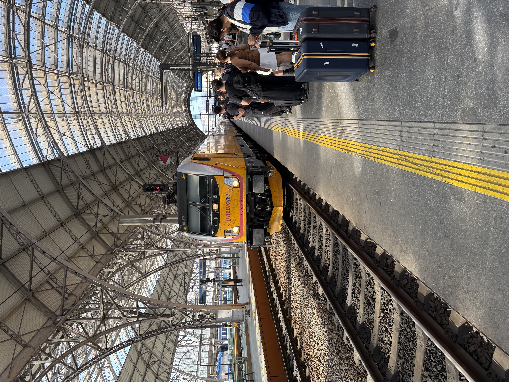
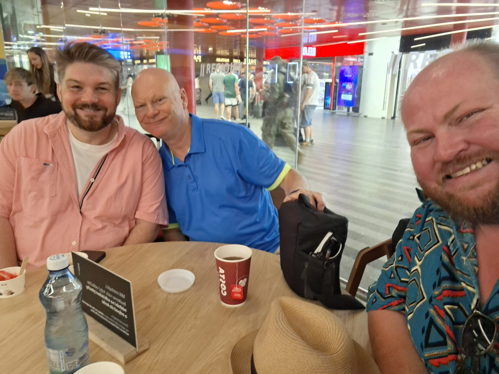
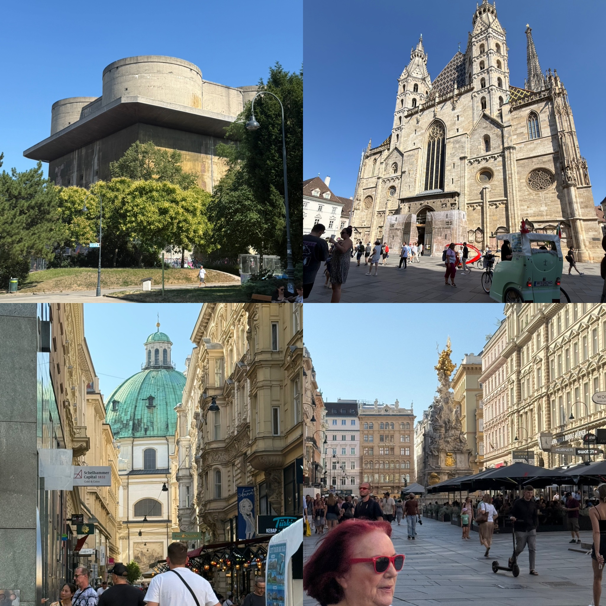
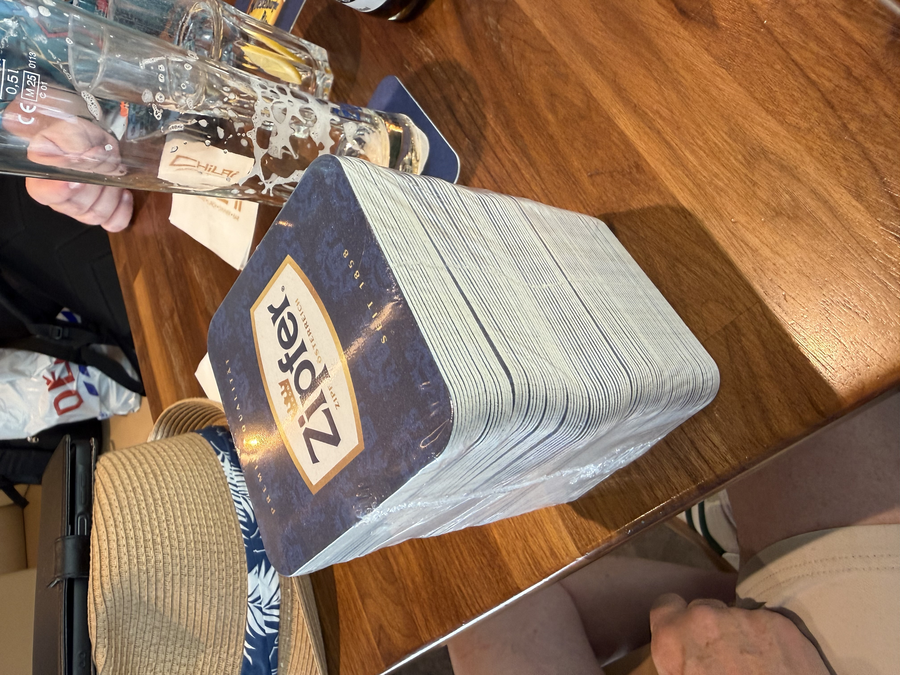
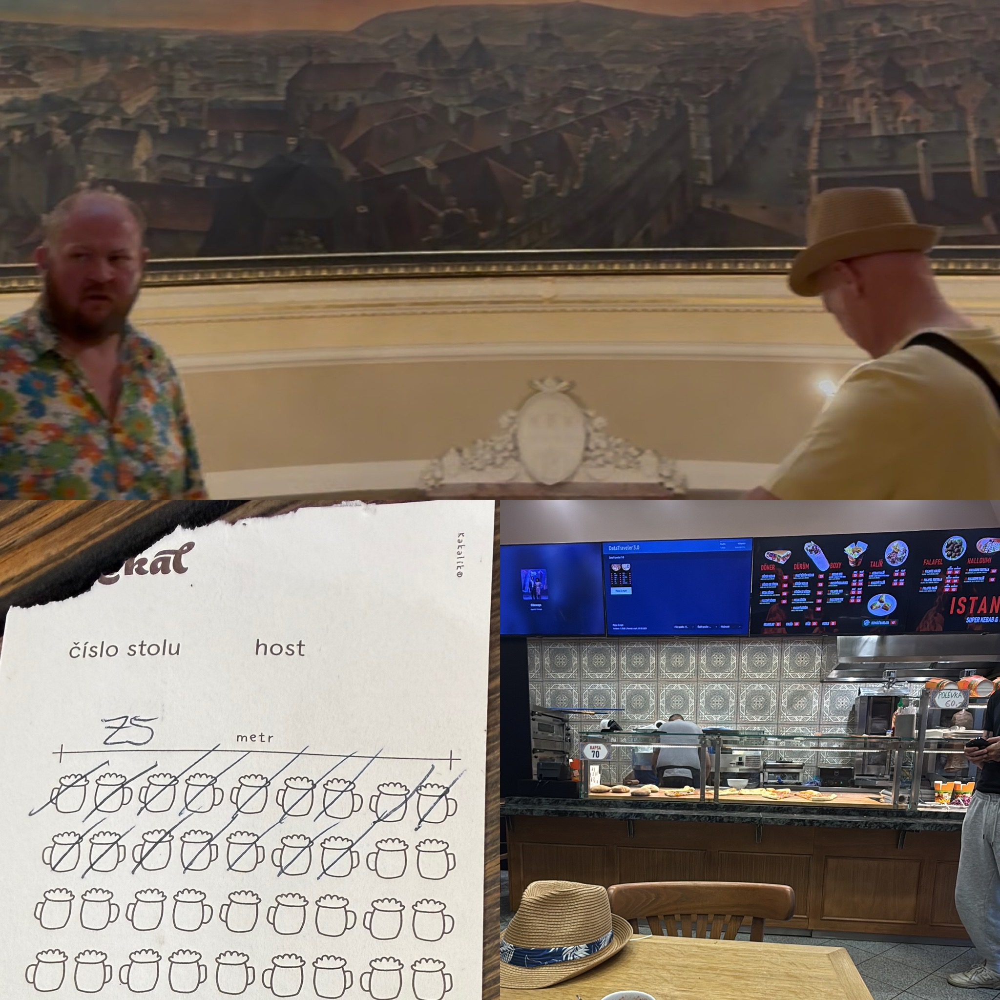
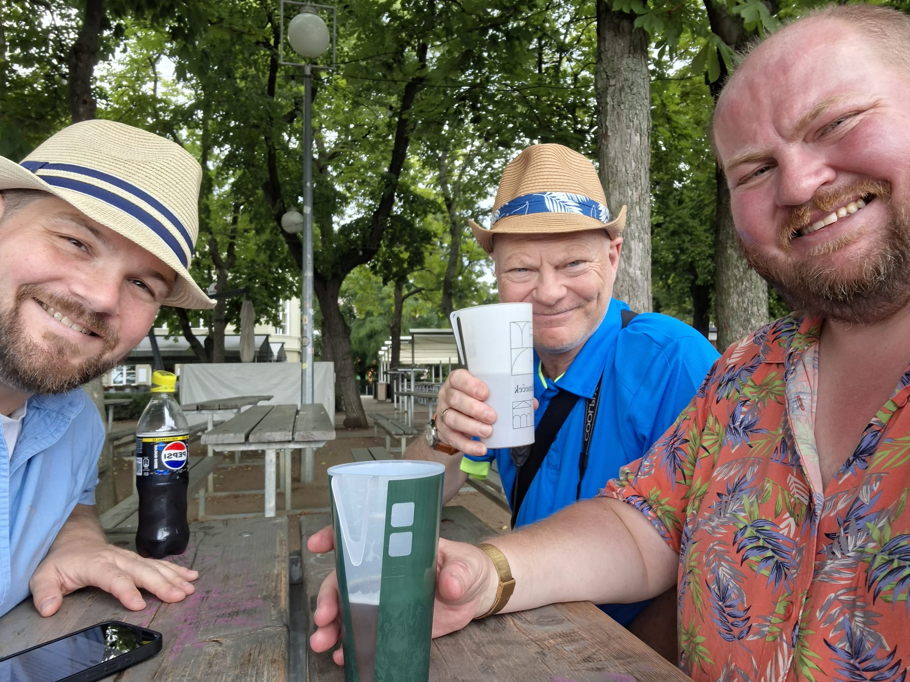

Chris, Steve and Jay's journey across Czech Republic, Austria, Slovakia, Hungary and Germany.
Status
Safely in Vienna
Trip outline
29 July — Austria
31 July — Slovakia
1 August — Hungary
6 August — Germany
Updates
Trip journal
Barichgasse 21, Vienna
Wednesday July 29, 2026
Vienna, Austria
On Wednesday morning we met at the Prague main train station ready for our trip to Vienna.
We discovered that our tickets allowed us access to the RegioJet passenger lounge for an hour before departure, where not only were free teas and coffee provided, but also vanilla and pomegranate ice cream. So no prizes for guessing what Jay had for breakfast.
After a short delay of 5 minutes the train pulled in to Platform 2 and we were soon aboard in our reserved table seats. Some of our South Korean friends decided to play Tetris with their suitcases in the luggage rack for the first half an hour, but once they were finished we were settled in for a lovely journey.
All three of us remarked on the quality of the train service, with the attendant giving out free bottles of water and newspapers despite the fact we were in the cheap seats, and Chris was even more pleased to learn that 500ml bottles of beer were available for 70c (60p). 5 bottles, several card games (cribbage, Flip 7 and taxi) and 4 1/2 hours later and we arrived at the main station in Vienna.
We quickly got our bearings in the 30 degree heat and found a local cafe to burn some time in whilst waiting for our AirBNB to become available. Chris and Steve had a couple of pints of the local brew while Jay decided to stick with the Coke after a few heavy days. Steve also scored a multipack of beer mats from the kind barman to add to his collection, although quite what he is planning to do with around 40 identical Zipfer beer mats is anyone’s guess.
We checked into our AirBNB and were delighted to find it was freezing cold and gave us some good relief from the overbearing sun outside. A quick recharge and we were off again to see the sights of Vienna. We got off the underground in Stephansplatz and decided to check out then huge St Stephen's Cathedral which we were all impressed by*, and we managed to convince Chris to join us on a tour of the catacombs. We saw the various tombs, and the jars of internal organs belonging to Hapsburg royalty, followed by the rooms downstairs containing the musty skeletons of 11,000 people, which grossed Jay out even though he was the one who pushed to go there.
A burger at an American burger bar for dinner and a few pints at the local Irish pub, then it was time to head back to the AirBNB for an early night, ready for our full day in Vienna tomorrow.
*We were less impressed by the €6.95 ATM fees we all got stung by, taking cash out to pay for the catacombs tour...

Service RJ1033, Prague to Vienna

A happy start to the day

Top left: WW2 Flak tower, Top right: St Stephen's Cathedral, Bottom: Street scenes in Vienna

Steve's latest acquisition
Jazz Dock
Tuesday July 28, 2026 (supplemental)
Prague, Czech Republic
Tuesday afternoon proved an enjoyable experience. After visiting Beer Time in Andel for food, quiz and beers we headed down to the river to spend the rest of the day at Jazz Dock with excellent company (the newly-married Mr and Mrs Schofield, as well as a special guest appearance live from the USA by Carley). Not to mention some delicious cocktails, a mojito for Steve and a Pina Colada for Jay.
We made a little game as always, waving at the boats going past and soliciting waves in return. One man on a large dinner cruise boat clearly wanted to wave but was holding himself back. We persevered and he eventually did give in to temptation and returned our waves with a cheeky smile. The evening came to a close with the three travellers giving a rendition of Tony Christie's Amarillo as we danced up the street and dispersed into the night.
Jazz Dock gathering in full swing
Beer Time, Andel
Tuesday July 28, 2026
Prague, Czech Republic
We finished Monday at Lokal, ticking off plenty of beers on the iconic ticket, and followed up with a kebab with all the trimmings from Istanbul (the kebab shop, not the city).
On Tuesday morning we were greeted by sunny intervals, a cool morning which allowed Chris and Steve to get out for a walk whilst Jay took care of some work he’d procrastinated. We visited the Museum of Prague, then afternoon of beer, quizzing and cards followed.
We are leaving for Vienna in the morning so the blog should get more interesting after that…

The boys at the museum, the Lokal ticket, the kebab shop
Letna Park
Monday July 27, 2026
Prague, Czech Republic
After an uneventful flight, we arrived at Prague Airport where Chris sailed through passport control with his residents card and Steve and Jay waited for over an hour behind half the population of South Korea, who had landed just before us.
We did a quick stop at Chris’s and the place Jay is staying before heading to Beer Spot for refreshments and food, and a catch up with Jacob.
Monday morning brought some cloud and rain to Prague and we have decided upon a chilled out day, strolling through several of the city’s parks, admiring peacocks, and settling for the afternoon at Letna beer garden.
The weather might be on the turn today, but we will miss this cool cloudy afternoon on our forthcoming travels!

Lads lads lads
Bristol Airport
Sunday July 26, 2026
Bristol, UK
A late wakeup by Jay and a tyre pressure warning light in Steve's car failed to dampen our spirits and we made it to BRS with time to spare.
Three pints, a crossword, and a bowl of chips (£30!) and we are boarding the plane,
Chris in EasyJet Plus royalty at the front and Steve and Jay herded in the back with the rest of the cattle.